Double Commander 保存其配置设置在文件中。您可以从 配置 配置部分配置这些配置文件的位置。通常不需要手动编辑这些文件，因为在少数情况下，Double Commander 的参数可以通过程序的界面访问。
主要文件包括：
doublecmd.xml – 所有主要程序设置;
doublecmd.cfg – 在初始化所有程序组件和加载 doublecmd.xml 之前应用的设置;
colors.json – 所有颜色设置，Double Commander 将颜色值存储在“Light”和“Dark”配置文件中，并根据当前主题（浅色或深色主题）自动选择配置文件;
extassoc.xml – 文件扩展名关联配置;
favoritetabs.xml – 收藏夹标签;
history.xml – 命令行和目录历史记录，搜索和替换等;
multiarc.ini – 外部压缩工具;
pixmaps.txt – 将文件扩展名映射到 MIME 类型图标名称;
session.ini – 子程序窗口的大小、位置和状态（这些设置为每个屏幕分辨率单独保存）；
shortcuts.scf – 键盘布局设置;
tabs.xml – 打开的标签列表;
其他一些... – 等等...
这些文件是自动生成的，除了 multiarc.ini 和 pixmaps.txt：它们包含在 Double Commander 的发行版中（在“默认”文件夹中），并在程序首次启动时复制到配置文件目录。
doublecmd.xml 中的配置版本定义了数据存储格式：如果在新版本的程序中发生更改（例如，添加了新参数或更改了现有参数），则在第一次启动时，Double Commander 将更新配置文件。升级过程将备份 doublecmd.xml 的先前版本。
“选项”窗口允许设置 Double Commander 中几乎所有的选项，但有一些 参数 只能在 doublecmd.xml 配置文件中手动更改。
窗口底部提供了按参数名称过滤的功能：程序将仅显示包含匹配参数的部分。要打开程序帮助中的相应部分，可以使用 帮助 按钮或 F1 键。
Double Commander 具有几个 内部命令，可以打开配置对话框并快速跳转到所需部分。
Double Commander 支持导入/导出某些设置：常用文件夹列表、收藏夹标签、外部压缩工具、工具栏（主工具栏和中间工具栏）、工具提示。此外，热键列表可以保存到新文件中，您可以在它们之间切换。
注意：在文件或目录选择按钮的右侧是按钮 一些选择适当路径的功能  ：弹出菜单包含变量列表（包括环境变量）和一些附加功能，请参阅 此处 的描述。
：弹出菜单包含变量列表（包括环境变量）和一些附加功能，请参阅 此处 的描述。
这些是可用于 Double Commander 的各种翻译。您可以选择首选语言。
有几个参数会影响 Double Commander 的某些行为。
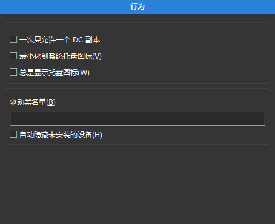
一次只允许一个 DC 副本 – 如果启用，则只能运行一个程序副本。如果尝试运行第二个 Double Commander 副本，则将激活第一个副本。
最小化到系统托盘图标 – 最小化时，Double Commander 将在系统托盘（通知区域）中显示其图标，而不是面板（或 Windows 任务栏）中。
总是显示托盘图标 – 如果启用，除了面板（或 Windows 任务栏）上的 Double Commander 窗口按钮外，还将额外显示托盘图标。
驱动器黑名单 – 使用此选项可以隐藏驱动器面板菜单栏中的某些驱动器。每个项目必须包含驱动器/挂载点的完整路径。多个驱动器之间用分号 ";" 分隔，不带空格。示例： /media/cdrom;/mnt/win_c (Linux) 或 a:\;b:\;d:\ (Windows)。在 Unix/Linux 中，您还可以使用通配符掩码，例如 AppImage 文件的示例： /tmp/.mount_*。隐藏的驱动器仍然可用，例如，您可以从常用文件夹列表菜单中打开它们或手动更改路径。
自动隐藏未安装的设备 – 未挂载的设备将自动从 驱动器按钮栏 和 驱动器列表 中删除。
本节包含内置 Double Commander 工具（编辑器（F4）、查看器（F3）和文件比较工具）以及启动终端的命令的设置。
您可以为编辑、查看和查找差异指定外部程序。这些外部程序将替代内部工具。
此部分有两个参数组：
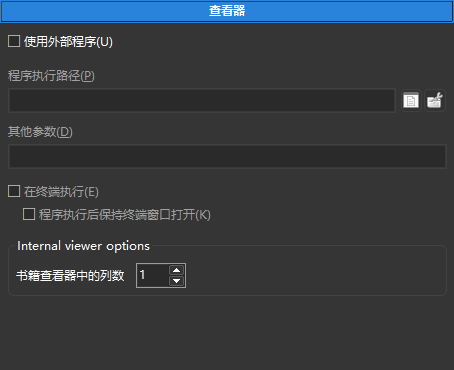
第一个组允许您指定用于查看文件的外部程序。每次调用查看器时，Double Commander 将自动将完整文件名作为最后一个启动参数添加。
此外：在终端中执行 和 执行程序后保持终端窗口打开 如果您使用的是控制台程序和/或程序的终端输出很重要（或仅仅是暂时用于调试），则可能会很有用。
下一个参数组是 内部查看器选项，但是几乎所有参数和开关都可以在 内部查看器 的窗口中找到。
书籍查看器中的列数 – 请在 此处 查看此模式的描述。
还有一些 参数 只能在 doublecmd.xml 配置文件中手动更改。
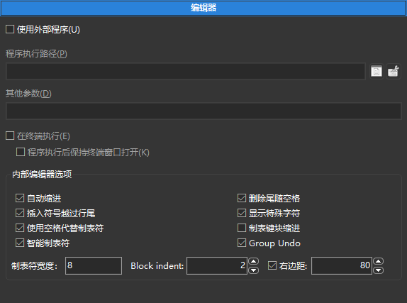
第一个参数组允许您指定用于编辑文本文件的外部程序。每次调用编辑器时，Double Commander 将自动将完整文件名作为最后一个启动参数添加。
此外：在终端中执行 和 执行程序后保持终端窗口打开 如果您使用的是控制台程序和/或程序的终端输出很重要（或仅仅是暂时用于调试），则可能会很有用。
内部编辑器选项：
自动缩进 – 允许在使用 Enter 创建新行时，使用与前一行相同数量的前导空格来缩进光标。
删除尾随空格 – 自动删除尾随空格，仅适用于编辑过的行。
插入符号越过行尾 – 允许光标进入超出行尾位置的空白区域。
显示特殊字符 – 显示空格和制表符的特殊字符。
使用空格代替制表符 – 将制表符转换为指定数量的空格字符（在输入时）。
制表键块缩进 – 如果启用，Tab 和 Shift+Tab 在选中文本时将作为块缩进和取消缩进。
智能制表符 – 当使用 Tab 键时，光标将移动到前一行的下一个非空格字符。
Group Undo – 如果启用，所有连续的相同类型的更改将在一次撤销或重做命令中处理，而不是逐个撤销/重做每个单独的文本更改。
制表符宽度 – 制表符的宽度（以字符数为单位）。如果启用 使用空格代替制表符，则 Tab 键将插入指定数量的空格字符。如果启用 智能制表符 选项，则此设置不适用。
Block indent – 设置使用相应命令时缩进增加或减少的字符数。
右边距 – 行长度标记，在给定位置的细垂直线：行不会因强制换行而被截断，这只是一个视觉提示。在建议限制字符串长度的情况下（例如，80 或 120 个字符），这很有用。
SynEdit 组件用于内部编辑器，某些语法高亮规则的设置是 SynEdit 的一部分，可以在此部分中找到。
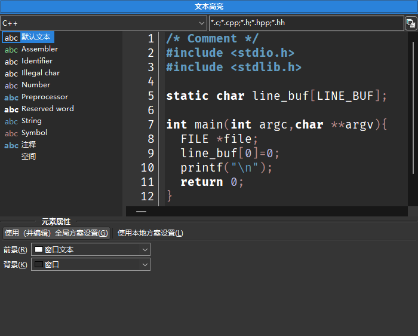
在窗口顶部，有一个带有文件类型（纯文本、编程和标记语言）的下拉菜单，以及一个用于文件扩展名列表的字段。按钮：
保存 – 将保存文件扩展名列表中的更改。
重置 – 将列表重置为默认值。
在窗口的左侧部分，有一个可用元素的列表，右侧部分是预览区域。
您可以更改用于关键字、字符串、数字、运算符等的文本和背景颜色以及字体样式（下划线、粗体、斜体和删除线）。对于默认文本，仅提供文本和背景颜色。
Text-mark 用于在元素周围添加边框：您可以选择颜色、边框类型和线条类型。
使用（并编辑）全局方案设置 和 使用本地方案设置 仅适用于默认文本：您可以一次更改所有文件类型的颜色，或仅更改某些文件类型的颜色。
所有设置都保存在 colors.json 文件中。
注意：可能的更改（修复或改进）文件解析（语法分析）、关键字列表等的方法：
此外，Double Commander 还使用 SynUniHighlighter 组件进行语法高亮，详细信息请参见 FAQ。
几乎所有参数和开关都可以在内置差异工具的窗口中找到，本节中只有两个参数组。
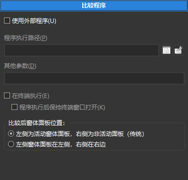
第一个组允许您指定一个外部文件比较程序。每次调用差异工具时，Double Commander 将自动将完整文件名作为最后的启动参数添加。
此外：在终端中执行 和 执行程序后保持终端窗口打开 如果您使用的是控制台程序和/或程序的终端输出很重要（或仅仅是为了调试）可能会很有用。
比较后框架面板的位置 – 定义文件名传递给比较程序（内置或外部）的顺序：
左侧为活动窗体面板，右侧为非活动窗体面板（传统） – 活动文件面板中的文件将在比较程序的左侧面板中打开，第二个文件将在右侧面板中打开。
左侧窗体面板在左侧，右侧在右侧 – 左侧文件面板中的文件将在比较程序的左侧面板中打开，第二个文件将在右侧面板中打开。
如果在活动面板中选择了两个文件，第一个文件将在比较程序的左侧面板中打开。
本节包含终端启动参数：
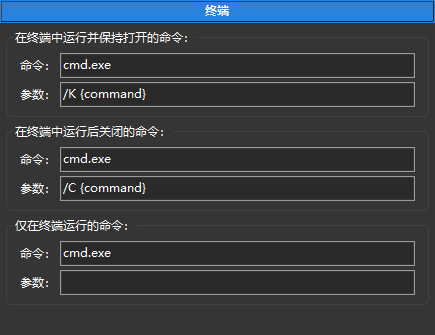
前两个组用于在终端中运行命令（要指示要在命令行上运行的命令的位置，请在参数字段中使用 {command}）。它们可以用于工具栏按钮、内部文件关联，以启动外部应用程序以 替换 内置文本编辑器、查看器和文件比较工具。您 可以添加 这些操作到文件上下文菜单（到“操作”子菜单）。
此外，第一个组用于使用 Shift+Enter 在终端中打开光标下的文件，并从命令行运行命令（但如果启用了 终端窗口，则命令将在其中执行）。
第三组允许指定在调用终端时将执行的命令（内部命令 cm_RunTerm，默认 F9）。
默认值：
Windows: cmd.exe
macOS: Double Commander 将自动检测系统设置中指定的程序。
Linux 和其他类 Unix 系统：
对于 Debian 和基于 Debian 的发行版（Ubuntu、Linux Mint、antiX、Devuan 等），将使用 x-terminal-emulator：这是指向这些系统默认使用的终端的符号链接。
否则，Double Commander 将尝试从桌面环境的设置中获取值：Cinnamon、GNOME、KDE、LXDE、LXQt、MATE 或 Xfce。
如果自动检测失败，Double Commander 将使用 xterm。
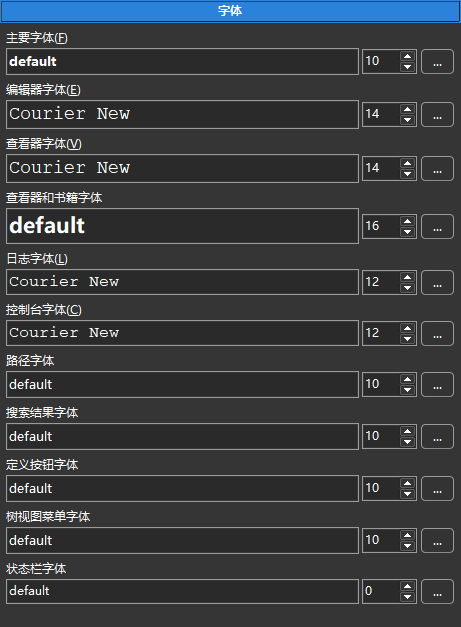
您可以为编辑器（F4）、查看器（F3）、文件面板（主要字体）和 Double Commander 界面的其他元素选择字体及其大小。每个字体的底部行允许您查看所选字体的显示效果。一个重要的说明：编辑器和查看器的字体必须是 等宽字体。下图说明了上方窗口中的比例字体（注意奇怪的间距）和下方窗口中的等宽字体（显示正常间距）。此外，某些比例字体的字符可能会相互覆盖，看起来相当奇怪。
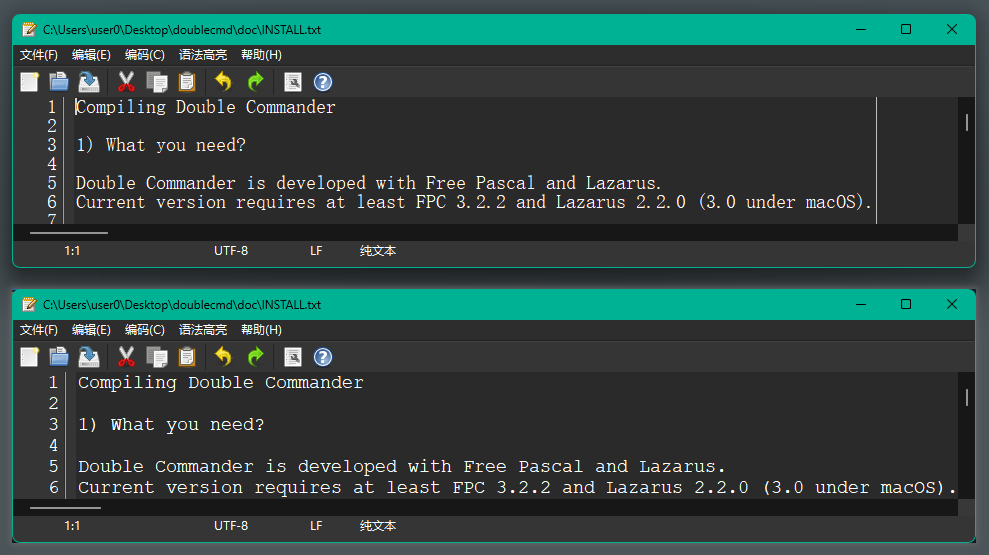
上方为正常（比例）字体，下方为等宽字体。
您还可以使用 Ctrl+鼠标滚轮来更改字体大小，此功能适用于 Double Commander 的以下界面元素或部分：
左侧和右侧面板中的文件列表;
当前目录（地址）栏;
功能键按钮栏;
树状图菜单;
搜索文件对话框中的搜索结果;
内部编辑器;
内部查看器（如果查看器显示文本，则此操作将更改字体大小；如果显示图像，则此操作将作为缩放命令工作）。
您还可以选择字体光栅化的类型（无论系统设置如何），请参阅 <Quality> 的描述。
本节包含未包含在其他设置部分中的颜色设置。参数按类别分组。

1. Dark mode – 启用或禁用暗黑模式支持（仅限 macOS 和 Windows 10 1809 及更高版本）。状态：
自动 – 将使用系统设置。
启用 – 强制启用。
禁用 – 强制禁用。
2. 查看器 – 由内置 文件查看器 使用的颜色设置（请参阅 此处 的查看模式描述）：
Book Mode – 对于“书籍”查看模式，可以设置文本颜色和背景颜色。
Image Mode：
Background 1: – 设置查看图像时窗口的背景颜色。
背景色 2: – 如果启用 显示透明度，内部查看器将使用棋盘图案作为背景来指示透明度，而 背景色 2 定义方块的颜色。如果未设置，查看器将自动计算该值：对于深色背景，将使用浅色方块，反之亦然。
3. 比较程序 – 用于内部 Differ tool: 你可以更改添加、删除和修改行的颜色，以及二进制模式下不同字符的颜色。
4. 日志 – 设置日志窗口中文本颜色的选项，包括信息消息、错误消息和成功操作消息。此外，这些颜色也用于 验证校验和 结果的窗口中。
5. 文件夹同步 – 用于内部 文件夹同步 工具：
Left: – 选定要在左侧复制或删除的文件。
Right: – 选定要在右侧复制或删除的文件。
Unknown: – 名称相同但不完全相同的文件。
6. 驱动器可用空间指示器 – 在这里你可以更改驱动器可用空间指示器的外观：

Double Commander 可以显示从绿色到红色的渐变或简单的单色指示器，在第二种情况下，您可以选择颜色和背景。如果可用磁盘空间少于 10%，将使用 指示器阈值颜色。
指示器示例是可点击的，因此您可以查看它的外观。
本节包含文件面板外观的设置：
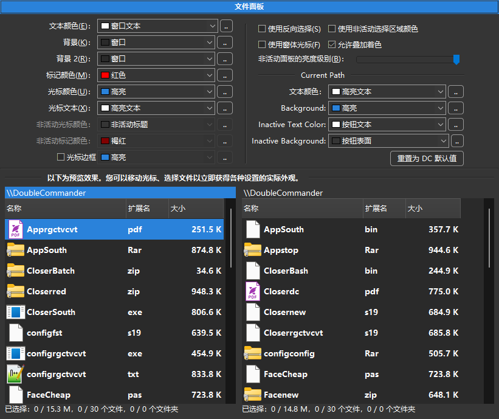
这里的颜色设置是两个文件面板的全局设置。这些设置可以通过创建自定义列样式来覆盖，该样式可以为面板中的每个选项卡具有自己的颜色设置等！有关如何执行此操作的详细信息，请参阅 文件视图 > 列 > 自定义列。您应该调整列的当前样式（默认情况下为 Default）或创建自己的样式并将其应用于任何选项卡。
在这里，您可以选择用于处理文件面板的颜色：文本颜色、背景、背景 2、标记颜色、光标颜色、光标文本、非活动光标颜色、非活动标记颜色，以及 光标边框（如果您不使用框架光标）。通过这两个背景选项，您可以在面板中制作交替条纹，如某些屏幕截图所示。
使用反向选择 – 反转标记文本和光标下标记文本的颜色。
使用非活动选择区域颜色 – 启用在非活动面板中显示光标。
使用窗体光标 – Double Commander 将使用框架而不是实心矩形。
允许叠加着色 启用使用与默认颜色不同的颜色来表示文件名的能力（请参阅 颜色 > 文件类型 部分）。
在 Current Path 参数组中，您可以更改活动和非活动文件面板的 当前目录栏 的文本颜色和背景颜色。
在这里，您还可以降低非活动面板的亮度。
窗口底部有一个预览区域，因此您可以一次查看所有更改。
重置为 DC 默认值 按钮将所有参数重置为默认值。
网格颜色也可以更改，但只能手动更改。您需要关闭应用程序，打开 colors.json 文件，并替换 FilePanel 对象中 GridLine 键的值。（不要忘记，colors.json 中的颜色存储在两个配置文件中：“Light”用于浅色主题，“Dark”用于深色主题。）
关于颜色格式：Double Commander 将颜色值存储为十进制数，格式为 $BBGGRR。例如，如果您想使用靛蓝色 #4B0082（$RRGGBB），那么进行重新排列，您将得到 82004B，现在您需要将此十六进制数转换为十进制。或者，您可以暂时为某种类型的文件添加颜色（见下文），通过名称或掩码在 colors.json 中找到它，复制值并删除。
在这里，您可以指定应赋予不同颜色的文件类型。必须启用 允许叠加着色 参数（默认启用）。
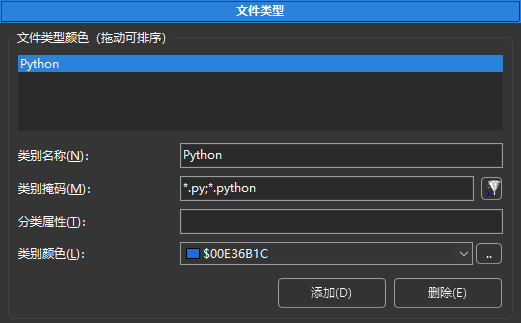
在 类别名称 行中，您可以写下文件的描述、它的功能或它打开的程序。
在 类别掩码 行中，放置一个通配符掩码以匹配文件类型（符号“*”表示匹配任意数量的字符，符号“？”表示匹配任意一个字符）。您可以在此处使用分号“;”放置多个文件类型，且之间不需要空格。您还可以使用搜索模版（ ），包括使用内容插件的搜索。
），包括使用内容插件的搜索。
在 分类属性 行中，您可以放置文件属性，DC 将匹配具有匹配属性的任何文件（如果使用搜索模版，则不可用）。文件属性由以下模版指定：
Windows: [d or l]rahs[c or e]tp
Unix/Linux: [b, c, d, f, l or s]rwxrwxrwx
即 模版必须匹配文件列表中的属性文本字符串。值的描述：
| Windows 属性 | |
|---|---|
| 属性字母 | 代表的含义 |
a | archive 存档 |
c | compressed (NTFS compression) 压缩（NTFS 压缩） |
d | directory 目录 |
e | encrypted (EFS encryption) 加密（EFS 加密） |
h | hidden 隐藏 |
l | symlink 符号链接 |
p | sparse 稀疏 |
r | read only 只读 |
s | system 系统 |
t | temporary 临时 |
| Unix/Linux 属性 | |
|---|---|
| 文件类型字母 | 代表的含义 |
b | block device 块设备 |
c | character device 字符设备 |
d | directory 目录 |
f | named pipe (FIFO) 命名管道（FIFO） |
l | symlink 符号链接 |
s | socket 套接字 |
关于Unix/Linux 模版的第二部分显示权限：读取（r）、写入（w）、执行（x）。这些值按以下顺序分为三组：用户（所有者）、用户组、其他所有人。
如果不应设置属性，则必须用“-”符号替换，不必要的属性应隐藏：符号“*”表示匹配任意数量的字符，符号“？”表示任意一个字符。例如，?r*（Windows）或?r-*（Linux）将找到所有只读文件和文件夹。
您可以使用列表中的颜色或使用“..”按钮指定自己的颜色。
自定义后，请不要忘记单击“应用”按钮。
Double Commander 从上到下检查列表，直到找到第一个匹配项：列表中较高的规则将覆盖下面的任何规则。
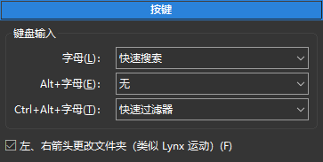
在这里，您可以设置在活动文件面板中按下某些键时的操作：字母、Alt+字母、Ctrl+Alt+字母。您可以选择以下操作之一：什么都不做，将焦点设置到命令行并输入命令，运行
左，右箭头更改文件夹（类似Lynx运动） – 右方向键 打开目录或在光标下运行程序，左方向键 打开父目录（仅在完整模式中）。
在本节中，您可以设置按键以启动命令，并为这些命令指定参数。
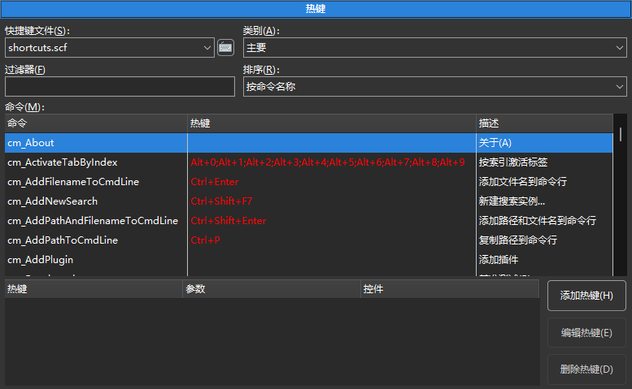
快捷键文件 – 一个下拉菜单，包含一组热键的文件列表。它们存储在程序设置文件的目录中。
右侧是与文件相关的菜单按钮：
当前文件的操作：立即保存、重命名、复制和删除。
恢复 DC 默认设置。
切换到上一个和下一个类别的命令。
切换命令表的排序顺序的命令（见下文）。
类别 – 显示热键组合的类别： 主要, 复制/移动对话框, 比较程序, 编辑注释对话框, 编辑器, 搜索文件, 批量重命名, 文件夹同步, 查看器.
过滤器 – 使您能够更快地搜索内部命令。
排序 – 切换命令表的排序顺序：
按命令名称。
按快捷键（分组） – 如果分配了多个热键，它们将以分号 ";" 分隔的形式列出。
按快捷键（每行一个）。
命令 – 列举可用的 内部命令 在 Double Commander 中。该列表以三列的表格形式显示：
命令（内部命令的名称）。
热键（分配的快捷键）。
描述（简短描述）。
窗口底部的表格显示了所选命令的分配的键盘快捷键、参数和界面元素（见下文）。
添加热键 – 将打开一个添加热键的窗口。
编辑热键 – 将打开相同的窗口，但热键和其他选项已设置。
删除热键 – 将删除列表中选定的热键。
添加热键的窗口：
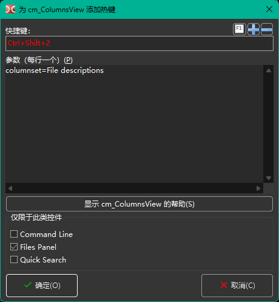
快捷键 – 新的快捷键将在此显示。单击框并按下组合键以输入新的热键。如果新组合已用于其他命令，Double Commander 将显示警告。
参数（每行一个）： – 允许为命令设置一些参数。大多数参数必须作为 parameter=value 添加（除非另有说明），每个参数必须单独一行，且不带引号或其他转义特殊字符和空格的方式。下面的按钮将打开 Double Commander 的 相应帮助文件 中的命令描述。
仅限于此类控件 – 热键仅在所选界面元素获得焦点时有效：命令行、文件或快速搜索面板。
窗口右侧有以下按钮：
F1 按钮将显示一个菜单，其中列出了按字母和修饰符分组的可用快捷键。
“+”按钮将添加另一个快捷键字段（最多五个）。
“-”按钮将从列表中删除最后一个快捷键。
您可以通过两种方式为内部命令设置多个热键：使用 添加热键 按钮，然后多次单击 “+” 按钮，或者多次单击 添加热键 按钮。第二种方法允许使用不同的参数来使用所选命令。

第一个参数组是 选择：
用鼠标选择 – 启用使用鼠标选择和取消选择文件和文件夹的功能。
通过点击图标 – 允许通过单击图标来选择文件。在缩略图视图中，通过单击图像的左侧部分（1/4 或 25%）来选择图标。
模式 – 设置左键或右键鼠标按钮。
有关详细信息，请参阅 选择文件 子章节。
滚动 – 使用鼠标滚轮滚动面板中文件列表的能力：
光标逐行移动 – 光标将在滚动发生之前上下移动面板。
逐行 – 光标保持在文件上，立即发生滚动。您还可以指定行数。
逐页 – 与前一个相同，但滚动是按页而不是按行进行的（滚动速度更快）。
打开方式... – 将确定在使用鼠标按钮单击面板中显示的文件列表中的元素时将启动的操作：
需要双击才能启动操作（默认）。
单击打开文件和文件夹。
单击仅打开文件夹。对于文件，需要双击。
文本光标不再跟随鼠标光标 – 用于最后两个值。如果启用单击，默认情况下文本光标将跟随鼠标光标：这有助于避免意外打开文件或文件夹。如果您不需要它（或不喜欢它），可以禁用它。
本节包含与 拖放 相关的设置。
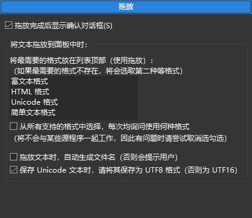
拖放完成后显示确认对话框 – 有助于避免在活动文件面板内或面板之间使用拖放文件时发生意外错误：Double Commander 将显示确认对话框，就像正常复制或移动文件一样。
下一个功能仅在 Windows 中可用：您可以将选定的文本从 Web 浏览器或文字处理器（例如 LibreOffice Writer 或 Microsoft Word）拖放到面板中并保存。在这里，您可以选择文件格式（RTF、HTML 或纯文本文件）、编码并启用自动名称生成。
在本节中，您可以设置各种文件排序选项以及日期/时间和大小格式。
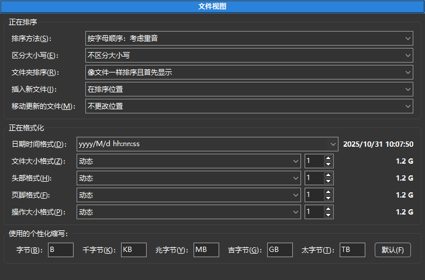
排序方法 – 设置文件面板中的排序方法：
按字母顺序：考虑重音 – 此方法将按字母顺序排序，考虑系统语言和区域设置的特殊性：还将考虑附加字符（例如，德语中的变音符号和其他变音符号，或俄语中的字母“ё”）。
按字母顺序：考虑特殊字符 – 与前一种方法类似，但列表将按特殊字符和标点符号在字母之前排序。
按自然顺序排序：考虑字母和数字 – 此方法将数字按数字排序：例如，“3”将显示在“20”之前，因为20大于3。
按自然顺序排序：考虑特殊字符 – 与前一种方法类似，但还会按特殊字符和标点符号进行排序。
区分大小写 – 补充所选方法：
不区分大小写；
根据区域设置（aAbBcC）；
先大写然后小写（ABCabc）。
文件夹排序 – 设置文件夹在文件列表中的位置：
按名称排序，首先显示；
像文件一样排序且首先显示；
像文件一样排序。
插入新文件 – 设置新文件在列表中的位置：
在文件列表顶部；
在文件夹之后（如果文件夹在文件前排序）；
在排序位置；
在文件列表底部。
移动更新的文件 – 如果用于排序的文件属性发生更改（修改日期、大小等），则设置位置：
不更改位置；
使用与新文件相同的设置；
要排序位置。
正在格式化组中的第一个参数是 日期时间格式。您可以从下拉列表中选择现有模版，或使用日期和时间格式字符设置自己的模版。
格式化字符如下所示（基于 Free Pascal 文档）。某些值取决于操作系统的区域设置！
作为示例，我们将使用 2021.01.24 09:06:02（即 yyyy.mm.dd hh:mm:ss）和美国区域。
| 可选字符 | ||
|---|---|---|
| 字符 | 描述 | 示例 |
c | 短日期格式和长时间格式（如果时间不为零） | 1/24/2021 9:06:02 |
f | 与 c 相同，但即使时间为零也会添加时间 | 1/24/2021 9:06:02 |
d | 月份中的天数 | 24 |
dd | 月份中的天数（前导零） | 24 |
ddd | 星期几（缩写） | Sun |
dddd | 星期几（全称） | Sunday |
ddddd | 短日期格式 | 1/24/2021 |
dddddd | 长日期格式 | Sunday, January 24, 2021 |
m | 月份或分钟（如果前面有 h 或 hh 修饰符） | 1 |
mm | 月份或分钟（如果前面有 h 或 hh 修饰符，带前导零） | 01 |
mmm | 月份（缩写） | Jun |
mmmm | 月份（全称） | January |
yy | 年份（两位数） | 21 |
yyyy | 年份（带世纪） | 2021 |
h | 小时 | 9 |
hh | 小时（前导零） | 09 |
n | 分钟 | 6 |
nn | 分钟（前导零） | 06 |
s | 秒 | 2 |
ss | 秒（前导零） | 02 |
z | 毫秒 | 1 |
zzz | 毫秒（前导零） | 001 |
t | 短时间格式 | 9:06 |
tt | 长时间格式 | 9:06:02 |
am/pm | 使用 12 小时制并相应地显示 am 和 pm（也可以使用 AM/PM、a/m 或 A/M）；例如，t AM/PM | 9:06 am |
/ | 插入日期分隔符 | / |
: | 插入时间分隔符 | : |
"text" | 文字文本；例如，yyyy "AD" | 2021 AD |
下一项参数设置文件大小格式：
文件大小格式 – 将用于文件面板。
头部格式 – 将用于驱动器列表和可用空间标签。
页脚格式 – 将用于文件面板的状态栏。
操作大小格式 – 将用于文件操作对话框：复制、移动、计算校验和等。
右侧还可以设置小数分隔符后的数字位数（即数字的整数部分和小数部分之间的分隔符）：0、1、2 或 3。
文件大小单位：字节、千字节、兆字节、吉字节、太字节或浮点数（ Double Commander 将根据大小自动选择单位）。
名称中的“个性化”意味着 Double Commander 将使用下面列表中的个性化缩写。默认按钮将其重置为所选语言的默认值（在相应的语言文件中指定）。
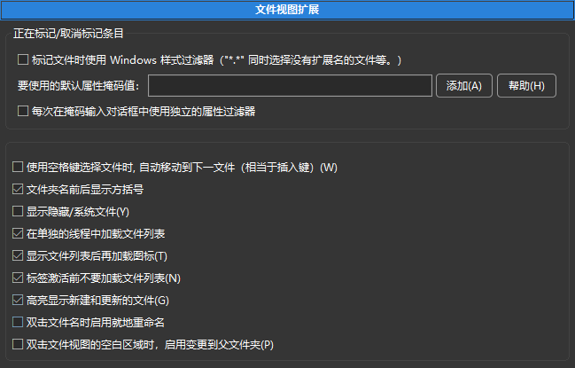
正在标记/取消标记条目：
标记文件时的 Windows 样式过滤器（"*.*" 同时选择没有扩展名的文件等。） – 默认情况下，掩码 "*.*" 匹配任何具有扩展名的文件的名称，对于任何文件名，请使用掩码 "*"。如果启用，掩码 "*.*" 将匹配任何文件。
要使用的默认属性掩码值 – 将用于以下命令：
全选 (cm_MarkMarkAll),
取消全选 (cm_MarkUnmarkAll),
反转选择 (cm_MarkInvert),
选择组 (cm_MarkPlus)
和 取消选择组 (cm_MarkMinus)。
例如，如果您希望这些命令仅适用于文件，请指定 d-。
添加按钮将打开文件属性选择窗口，您可以使用它或手动输入它们。有关文件属性及其使用的更多信息，请参见此处。
每次在掩码输入对话框中使用独立的属性过滤器 – 如果启用，属性过滤器将添加到选择组 (cm_MarkPlus)和取消选择组 (cm_MarkMinus)命令对话框中。
使用 <空格键> 选择文件时，自动移动到下一文件（相当于 <插入键>） – 在使用 空格 键选择时，光标向下移动。默认键是 Shift+Down 或 Shift+Up。
文件夹名前后显示方括号 – 有助于在禁用图标时直观地区分目录和文件。您还可以使用任何符号代替它们，请参阅 <FolderPrefix> 和 <FolderPostfix> 参数的描述 此处。
显示隐藏/系统文件 – 如果启用，Double Commander 将显示具有“隐藏”或“系统”属性（Windows）或名称以点字符开头（Linux 和其他类 Unix 系统）的文件和文件夹。这也可以从 主菜单 中更改。
参数 在单独的线程中加载文件列表 和 在文件列表后加载图标 旨在加快面板中文件列表的显示，即在打开大型目录时，应用程序窗口将更少地挂起。
标签激活前不要加载文件列表 – 启动时，Double Commander 将不会加载在上一个会话中打开的非激活选项卡的文件列表。
高亮显示新建和更新的文件 – 如果启用，当前正在创建或修改的文件的名称将闪烁。
双击文件名时启用就地重命名 – 是一种额外的能力，可以使用左键单击重命名文件（这不依赖于选择鼠标的所选键），与 Windows 资源管理器相同。单击后，鼠标光标必须保持静止至少一秒钟。在鼠标设置部分，应该选择文件和文件夹的双击或仅文件。
双击文件视图的空白区域时，启用变更到父文件夹 – 是一种额外的功能，可以简化目录导航。但如果您使用的是列集，并且当前目录中的文件列表不适合面板（即您看到垂直滚动条），则不适用。
这里只有两项参数。
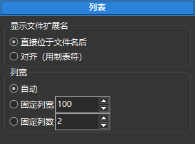
显示文件扩展名: 在文件名后直接显示 或 对齐（使用 Tab 键）。在第二种情况下，文件扩展名将单独显示，并对齐到列的右侧。
列宽: Double Commander 将自动设置大小（大小将取决于文件名的长度），或者您可以设置列的宽度（以像素为单位）或列的数量。
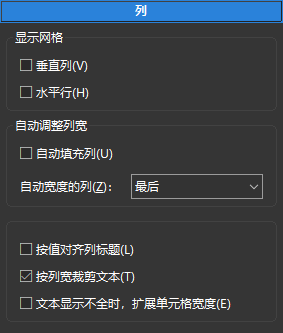
第一组是 显示网格:
垂直列 – 在面板中启用垂直网格线。
水平行 – 在面板中启用水平网格线。
下面的屏幕截图说明了这种微妙的网格效果。左侧的屏幕截图启用了垂直和水平线，而右侧的屏幕截图则没有。
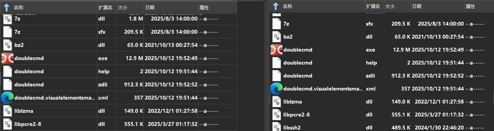
可以更改线条的颜色，更多细节请参见这里。
自动填充列 – 如果启用，当调整窗口大小时（或如果存在空闲空间），Double Commander 将调整在下一个选项 自动宽度的列：（首先或最后）中选择的列的大小。将不提供水平滚动条。
按值对齐列标题 – 如果启用，Double Commander 将使列标题与内容对齐（而不是左对齐）。
如果列的内容大于其宽度：
按列宽裁剪文本 – 有时列文本可能会重叠到其他列中。此选项会在列边界处截断任何多余的文本。
文本显示不全时，扩展单元格宽度 – 如果文本不适合且相邻单元格为空，则文本也将占用相邻单元格。
在本节中，您可以自定义面板外观、列、颜色、字体等。Double Commander 在这方面非常易于配置。
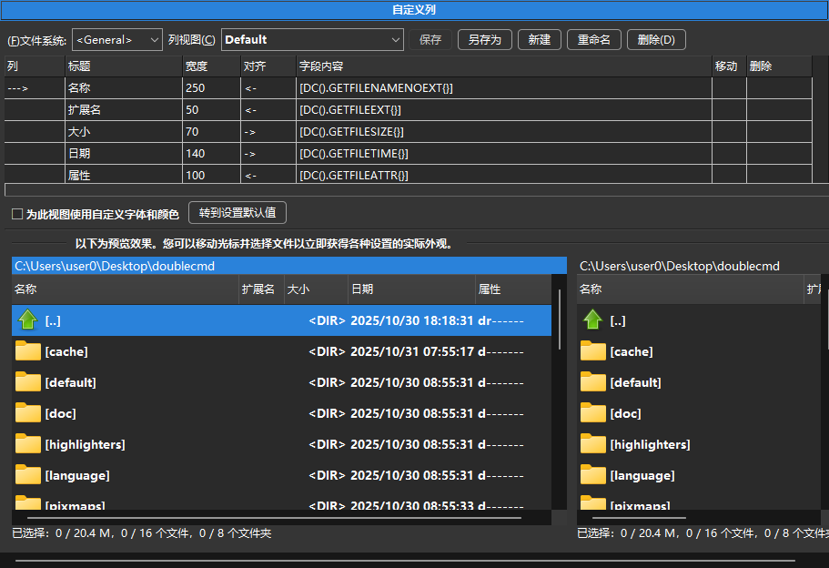
窗口底部有一个预览区域，因此您可以一次查看所有更改。您可以移动光标并选择文件，以立即获得各种设置的实际外观和感觉。
文件系统 – 允许切换到 WFX 插件的列设置（如果安装的插件支持它）。
列视图 – 现有列样式的列表。默认样式为 默认。
保存 – 保存所选列集中的更改。
另存为 – 允许将所选列集（原样或更改后）另存为新名称。
新建 – 创建一个基于所选列集的新列集。名称相同 + 当前日期和时间。
重命名 – 将提示输入新名称。
删除 – 删除所选列集。
下面是所选集的列的表格，在这里您可以设置列的编号、名称、内容、位置和大小。表格中的行数等于标签中的列数。添加新列：使用 下箭头 键或在表格附近的空白区域右键单击并选择 添加列。
这些是确定列表格的参数（单击框以编辑它们）：
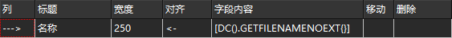
列 – 显示所选列的指示器。
标题 – 指定将在标签页标题栏中显示的列名称。您可以设置任何您喜欢的名称。
宽度 – 列宽（以像素为单位），将在程序启动时设置。注意：宽度取决于列内容，例如，文件扩展名列的宽度将很小。
对齐 – 设置列内容的对齐方式。变体包括：
"<-" – 左对齐；
"->" – 右对齐；
"=" – 居中对齐。
字段内容 – 设置列的基本内容。当选择单元格时，右侧将出现“+”按钮，您可以选择 Double Commander 的内部字段（子菜单“DC”）或已安装的 WDX 插件的字段（子菜单“插件”）。内部字段列表：
GETFILENAME – 文件名和扩展名（text.txt）。
GETFILENAMENOEXT – 文件名且无扩展名（text）。
GETFILEEXT – 文件扩展名（从点到最后，例如 txt）。
GETFILESIZE – 文件或目录大小。默认情况下，外观将取决于在 文件视图 部分中选择的选项，但所有可能的大小格式也可用。
GETFILETIME – 文件或目录修改日期。
GETFILECREATIONTIME – 文件或目录创建日期。
GETFILELASTACCESSTIME – 文件或目录最后访问日期。
GETFILECHANGETIME – 文件或目录状态更改日期。
GETFILEATTR – 文件或目录属性。您可以选择字符串或数字（八进制）值。在 Windows 中，如果在文件面板中显示 Unix 属性（例如，使用 FTP 插件），则可以使用八进制值。有关字符串值的详细描述，请参见 此处。
GETFILEPATH – 当前项目的路径。用途：通常用于搜索结果。
GETFILEGROUP – 显示文件所有者的组。
GETFILEOWNER – 显示文件的所有者。
GETFILELINKTO – 显示符号链接的目标路径和文件。
GETFILETYPE – 文件类型（如在 Windows 资源管理器或 MIME 类型中）。
GETFILECOMMENT – 来自 descript.ion 的文件或目录描述（注释）（详细信息请参见 此处）。
GETFILECOMPRESSEDSIZE – 压缩文件大小（如果使用 NTFS 压缩，则为实际大小）。
默认情况下，带有时间戳的字段使用在 文件视图 配置部分中选择的日期和时间格式。您还可以直接在大括号内的列中指定首选格式，使用相同的 日期和时间格式字符。
移动 – 允许移动行（这相当于重新排序列）。在移动框中单击两次，您将看到一种旋转器出现，单击上部将行向上移动（列向左移动）。
删除 – 允许删除任何行。要删除：单击该行的删除框。然后再次单击，这时会出现一个删除符号。如果您第三次单击，该行将从表中删除。
接下来，您可以更改文件面板的外观。
转到设置默认值 – 打开 颜色 > 文件面板 部分。
仅对该视图使用自定义字体和颜色 – 仅允许更改此列集的文件面板外观（如果需要，可以单独为每列更改）。您可以覆盖文件面板的字体以及 颜色 > 文件面板 中的全局设置：
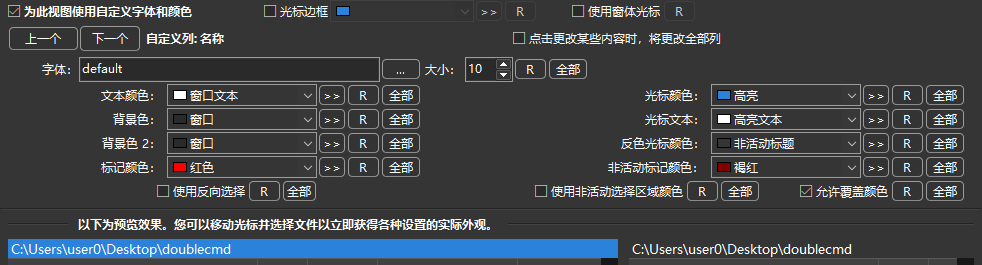
注意：光标边框 和 使用窗体光标 仅适用于整个列集。
上一个、下一个 – 切换列。
自定义列 – 显示自定义列的名称。
>> – 选择调色板中任意颜色的按钮。
R – 恢复默认值。
全部 – 将修改应用于所有其他列。
插件是增强 Double Commander 功能的扩展。
首先，一些通用设置。
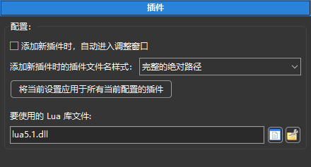
添加新插件时，自动进入调整窗口 – 请参阅下面的 调整 按钮的描述。
添加新插件时的插件文件名样式 – 在这里您可以选择添加插件时路径的设置方式：
完整的绝对路径
相对于 %COMMANDER_PATH% 的路径。
相对于指定路径的路径。
您还可以将所选方式应用于已添加的插件。
要使用的 Lua 库文件 – Lua 库的完整名称，或者仅在文件位于程序目录或系统库目录中时使用文件名。此路径可以相对于 Double Commander 可执行文件。 （Lua 脚本可用于自动化和作为内容插件，更多详细信息请参见 此处。）
有几种类型的插件：
1. 压缩插件 (WCX)
压缩插件用于解压特定类型的文件，通常是压缩包格式。一些插件还支持创建新压缩包和修改现有压缩包。
有些插件允许保存所选文件的列表或使用批处理：创建链接、转换文件、根据特定条件复制等。
顺序很重要：在选择合适的插件时，Double Commander 从上到下按扩展名检查。使用 按扩展名/按插件 按钮切换列表视图并拖放。
2. 内容插件 (WDX)
内容插件旨在获取文件的属性或其内容的信息（例如，EXIF 或 ID3 标签）。您可以在文件搜索或批量重命名工具、列集、工具提示中使用这些数据。
此外，Double Commander 还支持用 Lua 语言编写的内容插件（脚本的添加方式与普通插件相同）。示例可以在程序文件夹中找到（plugins/wdx/scripts）。
3. 文件系统插件 (WFX)
文件系统插件使用自己的文件系统或提供对其他文件系统和设备（本地或远程）的访问。例如，FTP 服务器、网络目录、移动设备。它还可以是文件列表、正在运行的进程和服务或 Windows 注册表。
4. 查看器插件 (WLX)
内部查看器显示纯文本文件、某些图像格式和控制台命令输出，插件允许扩展此列表：电子文档和数据库、音频和视频文件、字体文件、压缩包内容、某些文件的详细信息、带有语法高亮的源代码文件。
顺序很重要：在选择合适的插件时，Double Commander 从上到下检查。
5. 搜索插件 (DSX)
搜索插件是 Double Commander 自有的插件类型，这些插件使用控制台程序搜索文件（例如，Locate、Everything 或 Recoll）。DSX 插件接口允许从“标准”和“高级”选项卡向它们发送 搜索参数值。
按钮：
添加 – 打开文件选择对话框。或者，您可以使用内部命令 cm_AddPlugin（插件也可以自动安装）。
禁用 – 允许暂时禁用所选插件。
移除除 – 从列表中删除所选插件（但不删除插件文件！）。
调整 – 操作取决于插件类型：
WCX: 更改插件路径、设置文件扩展名和支持的功能；
WDX 和 WLX: 更改插件路径、显示名称或检测字符串；
WFX: 更改插件路径或显示名称。
配置 – 打开插件的设置窗口（如果所选插件支持此功能）。
Double Commander 支持使用主密码来保护 WCX 和 WFX 插件中的密码（如果插件开发者提供了此功能的使用）。这很方便，因为您的密码将受到加密保护，您只需记住一个密码。密码被加密两次，第一次使用 Blowfish（448 位），然后使用 AES（256 位）。
注意：目前，Double Commander 不支持更改主密码：如有必要，您需要在插件设置中禁用主密码的使用，关闭程序，打开配置文件目录，删除pwd.ini文件，重新运行程序并在插件设置中启用主密码。要删除过时或不必要的保存密码，您需要关闭程序并手动编辑pwd.ini文件。

您可以在此处更改主窗口的布局。我想，所有可用的选项在上面的屏幕截图（布局）中都有解释。下面的屏幕截图说明了在未选择所有布局选项的情况下，DC 的外观。
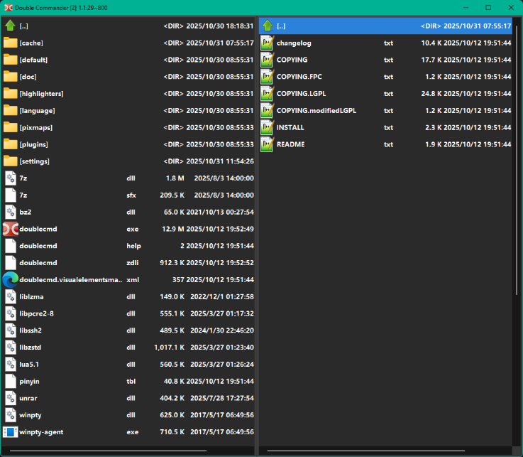
在此部分中，您可以选择 Double Commander 在 驱动器列表菜单 中显示哪些附加信息：卷标、文件系统和可用空间。
在此部分中，您可以启用树状视图菜单并选择其使用位置。
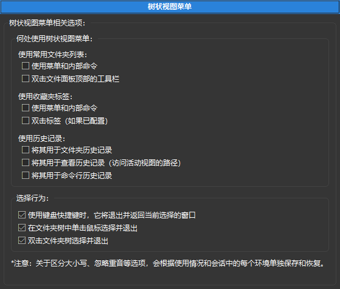
树状视图菜单是一种将某些 Double Commander 菜单以树状结构显示在单独窗口中的方式：常用文件夹列表、收藏夹标签、目录和命令行历史记录。这种内容呈现方式和过滤器将帮助您快速选择所需的菜单项。
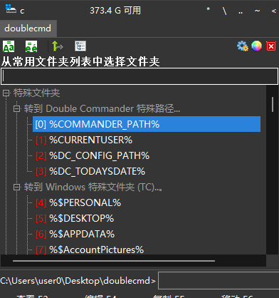
使用相应内部命令的参数，您可以设置树状视图菜单的位置：
菜单将从活动面板的左上角显示；
菜单将显示在当前鼠标光标位置。
此外，Double Commander 还可以将主菜单和工具栏显示为树状结构（始终位于其窗口的中心），请参阅命令 cm_ShowMainMenu 和 cm_ShowButtonMenu 的描述。
在此处，您可以根据自己的喜好自定义菜单的外观，预览将显示所有更改，直到保存。
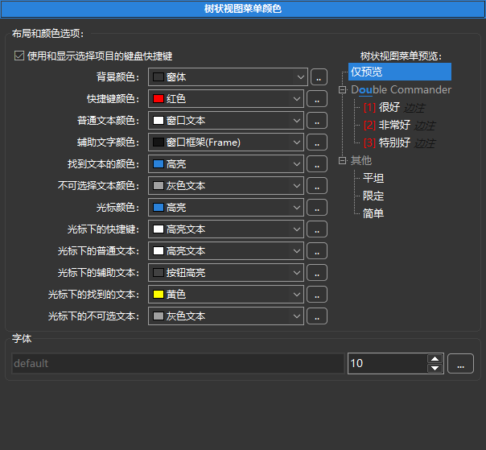
2.11. 工具栏 和 工具栏 > 工具栏中间
请参阅专门的 工具栏 帮助页面，了解如何使用和配置它。
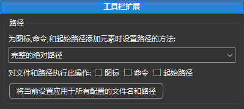
在此部分中，您可以选择在添加图标、命令和起始路径时如何设置路径：
完整的绝对路径。
相对于 %COMMANDER_PATH% 的路径。
相对于以下。
此外，您还可以将当前设置应用于所有配置的文件名和路径。
此部分包含与文件操作相关的设置。
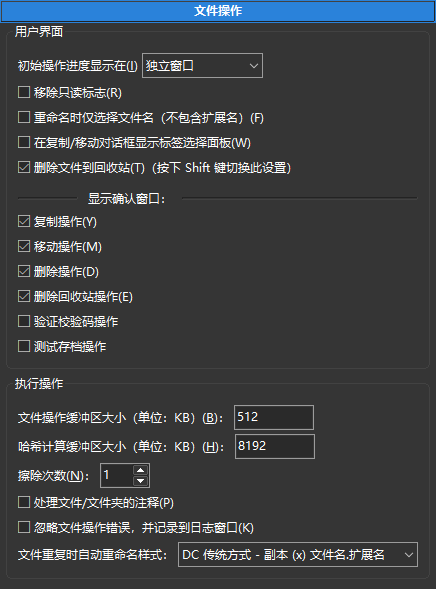
初始操作进度显示在 – 设置文件操作进度的初始显示方式和位置：
独立窗口;
最小化独立窗口;
操作面板：将使用功能键按钮栏上方的特殊面板
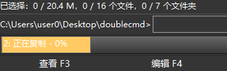
(您可以通过鼠标单击它切换为在独立窗口中显示进度).
移除只读标志 – 如果启用，Double Commander 将在 Windows 中删除此标志，并在 Linux 中添加 "w" 属性。这在从 CD/DVD 媒体复制文件时非常方便，因为文件默认会保留只读属性。
重命名时仅选择文件名（不包含扩展名） – 如果启用，使用 F2 键重命名时将选择文件名中最后一个点之前的所有字符，否则将选择整个文件名。
在复制/移动对话框显示标签选择面板 – 如果目标面板有多个标签，在复制/移动时可以选择目标标签：
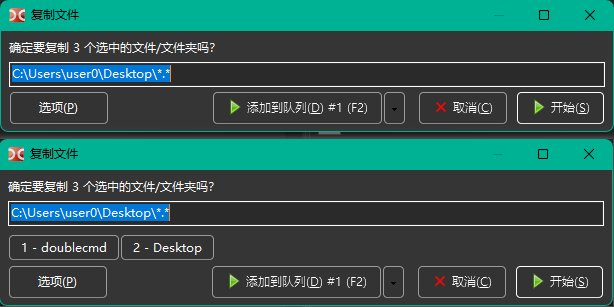
删除文件到回收站（按下 Shift 键切换此设置） – 如果启用，Double Commander 将在您按下 F8 或 Del 时将选定的文件或光标下的文件删除到回收站，并在您使用 Shift+F8 或 Shift+Del 时永久删除。如果未选中，则这些键的行为将被反转。
显示确认窗口 – 允许选择 Double Commander 将显示确认对话框的文件操作。默认情况下选择最大安全行为。请记住，当您使用 拖放 时，此参数组不被考虑：在这种情况下，Double Commander 在 鼠标 > 拖放 设置部分使用独立参数。
以下参数与执行操作直接相关。
文件操作缓冲区大小（单位：KB） 和 哈希计算缓冲区大小（单位：KB） 参数设置用于复制、移动、拆分或合并文件、按内容搜索文件和计算校验和等操作的分配内存大小。您应该记住，没有通用值，但可以尝试找到更合适的大小。
注意：第一个参数在 Windows 中的复制功能中未使用，因为使用了系统函数进行复制。
擦除次数 – 在这里可以指定对 安全删除文件 的重写次数。
处理文件/文件夹的注释 – 如果启用，并且您有一个附加了 注释 的文件/文件夹，并且您将其复制或移动到另一个文件夹，则注释将与文件/文件夹一起复制或移动到目标位置。
忽略文件操作错误，并记录到日志窗口 – 如果发生文件操作错误，错误消息将出现在面板下方的日志窗口中，而不是弹出对话框中。这可能很有用，因为错误窗口会暂停操作。在 日志 设置部分，您可以限制消息的总数，仅允许 "错误" 状态的消息。
该参数在大多数文件操作中都被考虑：复制、移动、删除、擦除、合并和拆分文件、设置文件属性（时间戳、所有者、属性）、计算校验和，以及在处理压缩包、WFX 插件和 GVfs 时的文件操作。
文件重复时自动重命名样式： – 如果目标目录中已经存在同名文件，则设置文件自动重命名模版（即当您在复制/移动对话框中选择 自动重命名源文件 或 自动重命名目标文件 时）： "Copy (x) filename.ext", "filename (x).ext" 或 "filename(x).ext"，其中 "x" 是计数器（2、3、4 等）。
查看 文件搜索 帮助页面的描述。
查看 批量重命名工具 帮助页面的描述。
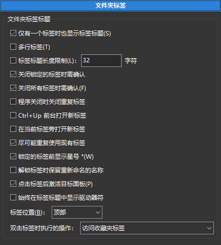
仅有一个标签时也显示标签标题 – 如果禁用此选项，并且面板上只有一个标签，则不会出现标签头（通常这在视觉上更具吸引力）。
多行标签（仅限 Windows） – 如果文件夹标签不适合一行，则将放置在多行中。否则，将在右侧显示滚动按钮（GTK2：在右侧和左侧）。
标签标题长度限制： – 长名称的标签将被限制为此长度，如果超过此值，则显示的名称将被截断。
关闭锁定的标签时需确认 – 如果启用，则会提示确认您希望关闭锁定标签。否则，此类标签将像普通标签一样关闭。
关闭所有标签时需确认 – 如果选择并执行 关闭所有标签 命令，则此选项将提示您确认是否希望删除所有非活动标签。
程序关闭时关闭重复标签 – 如果启用， Double Commander 将检查打开的标签列表并关闭重复标签（每个面板单独处理！），只有第一个标签将被保留（从左侧开始计数）。
Ctrl+Up 前台打开新标签 – 此选项更改命令 在新标签中打开文件夹（cm_OpenDirInNewTab）的行为：如果启用，则 Double Commander 将在光标下的目录中打开新标签并切换到该标签。
在当前标签旁打开新标签 – 如果启用，将在当前活动标签的右侧创建新标签。如果不启用，新标签将添加到最后一个标签的右侧。
尽可能重复使用现有标签 – 对于在新标签中更改目录的锁定标签：如果所选文件夹在任何标签中已经打开，则将激活该标签，而不是创建新标签。
显示标签关闭按钮（仅限类 Unix 系统） – 如果选中，将在标签上显示一个小 "x" 按钮，允许单击它以关闭标签。
锁定的标签前显示星号 * – 以区分锁定标签和未锁定标签。锁定标签将标记为 "*"。标签 Downloads 被锁定：

解锁标签时保留重命名的名称 – 当您将标签的状态从 "锁定标签" 更改为 "普通标签" 时， Double Commander 将返回常规标签名称（当前文件夹名称）：此选项允许保留更改后的名称。
点击标签后激活目标面板 – 如果启用，当您单击另一个面板上的标签时，焦点将自动转移到该面板（它将成为活动面板）。此外，在以这种方式切换面板时，光标位置将被保留。
始终在标签标题中显示驱动器符（仅限 Windows） – 在文件夹名称之前显示驱动器字母和冒号，例如 "c:plugins"。
标签位置： – 将文件夹标签放置在文件面板的顶部或底部。
双击标签时的操作： – 您可以选择以下操作之一：
什么都不做；
关闭标签；
访问收藏夹标签（保存当前标签，加载保存的标签或配置）；
显示与 "标签" 菜单中相同项目的标签弹出菜单。
保存的标签集列表可在 "收藏夹" 菜单和通过 cm_LoadFavoriteTabs 命令调用的弹出菜单中找到。
在本节中您可以管理它们：更改顺序、名称、删除不必要的、排序或分组到子菜单中。
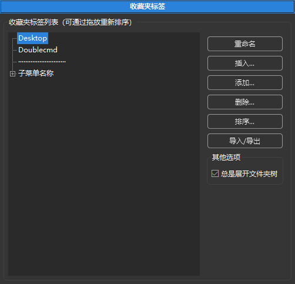
您还可以将条目导出到所选目录并导入它们。每个条目将保存到单独的 .tab 文件中（如果需要，可以使用 cm_LoadTabs 命令加载此类文件中的标签）。
一些典型操作已添加到条目的上下文菜单中。
本节包含对收藏夹标签的附加配置。
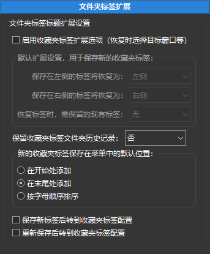
启用收藏夹标签扩展选项（还原时选择目标窗口等） – 默认情况下，保存的标签将在同一面板中还原，并将替换所有打开的标签，您可以通过以下方式更改它：
保存在左侧的标签将恢复为：
保存在右侧的标签将恢复为：
恢复标签时，需保留现有标签： – 即收藏夹标签将添加到已经打开的标签中。
每个参数可用的值有：左侧、右侧、活动、非活动、全部 或 无。
保留收藏夹标签文件夹历史记录： – 启用或禁用为每个标签保存访问过的目录的历史记录。
您还可以单独为每个标签集应用这些参数。
新的收藏夹标签在保存在菜单中的默认位置： – determines the order of adding a new set:
在开始处添加
在末尾处添加
按字母顺序排序
您还可以选择在保存新标签或重新保存当前标签后自动打开 收藏夹标签 设置部分：
保存新标签后转到收藏夹标签配置。
重新保存后转到收藏夹标签配置。
在这里，您可以选择记录 Double Commander 操作的文件名（复制或移动文件、创建目录、启动外部应用程序等）。您还可以选择要记录哪些操作。
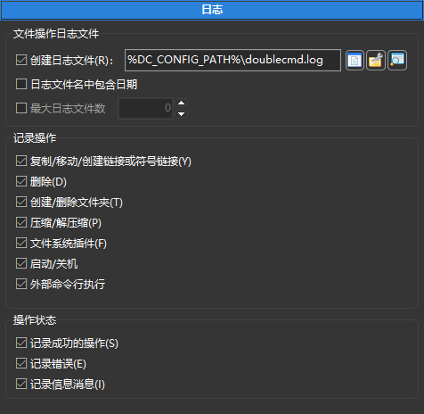
如果启用 日志文件名中包含日期，Double Commander 将为每一天创建一个单独的文件。在这种情况下，您可以设置日志文件的数量：较旧的文件将被自动删除。
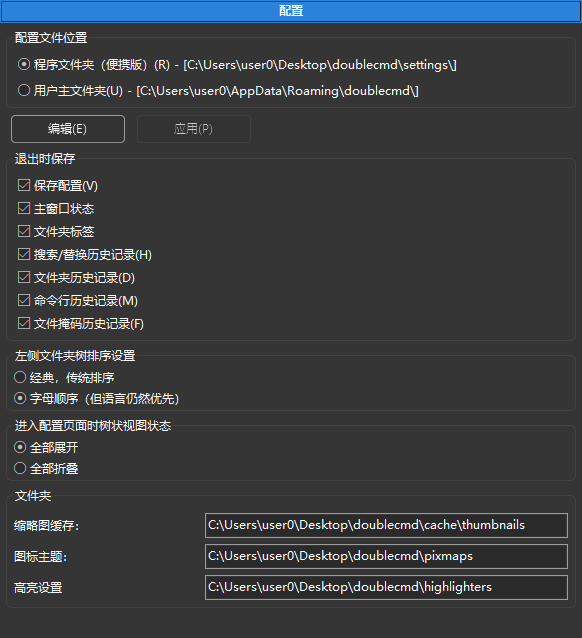
配置文件位置 – 在这里，您可以选择存储所有配置文件的位置（您还可以在此处查看完整路径）：
程序目录中的 "settings" 文件夹（便携版）。
用户主文件夹。
作为指示，Double Commander 在程序目录的 "settings" 文件夹中使用一个空的 doublecmd.inf 文件： 如果该文件存在，Double Commander 将从 "settings" 文件夹加载配置文件并将其保存在此处，否则 Double Commander 将使用当前用户的文件夹。 您可以手动添加 doublecmd.inf 文件并获得便携版本，或通过将存储方法切换到用户文件夹来删除它。
如果您使用 --config-dir 参数启动 Double Commander，则 DC 将仅写入 在命令行中设置 并显示配置文件的完整路径。
要快速导航到配置文件所在的目录，您可以使用 特殊目录 子菜单在 常用文件夹列表 菜单中，或使用 %DC_CONFIG_PATH% 变量。
按钮 编辑 和 应用 – 允许打开 doublecmd.xml 配置文件并手动更改设置。请记住，某些设置需要重新启动 Double Commander 才能生效。
注意（或小技巧）：这种方法允许立即应用设置，而无需重新启动 DC（但并非全部！）：例如，您可以更改并立即应用文件面板中图标的大小，但无法在不重新启动的情况下更改程序语言。
退出时保存 – 在这里，您可以选择 Double Commander 在退出时保存的内容。复选框 保存配置 启用或禁用保存：
主窗口状态 – 应用程序窗口的大小和位置。
文件夹标签 – 左右面板中打开的标签列表。
搜索/替换历史记录 – 文件搜索 历史（文件名掩码除外，见下文）、批量重命名工具 中的掩码历史以及文本搜索和替换历史：按文件内容、查看器、内部编辑器和内置差异工具搜索，以及在常用文件夹列表和工具栏设置中搜索和替换。每个条目的文本搜索选项（区分大小写、正则表达式 和 十六进制）的状态也会被保存。
文件夹历史记录 – 所有访问过的文件夹列表（见下文说明）。
命令行历史记录 – 在 命令行 中使用的命令。
文件掩码历史记录 – Double Commander 保存了多个工具使用的文件掩码的一般历史记录：搜索文件、目录同步 中的过滤器和 压缩包解压 中的命令，以及 选择和取消选择文件组 的命令。
历史记录中的条目数量最多限制为 50。
关于访问过的目录历史的说明：在会话期间，Double Commander 在内存中最多存储 255 个访问过的目录（但是，当程序关闭时，仅最后 50 个条目将被保存）。您可以在调用 cm_DirHistory 命令时在弹出菜单中更改历史条目的数量（默认值为 30，请参见 Count 属性在 <DirHistory> 标签中），但是在使用 树状视图菜单 时，将显示所有可用的历史记录。
注意：搜索模版与历史记录无关，并单独保存（在 doublecmd.xml 配置文件中）。要管理模版列表，您可以使用 文件搜索 工具。
您可以选择设置部分列表的外观：
左侧文件夹数排序设置 – 您可以选择经典（如 Double Commander 和帮助的源代码中）或按字母顺序。在这两种情况下，语言 仍然优先。
进入配置页面时树状视图状态 – 全部展开或全部折叠。
目录 – 在这里，您可以看到 Double Commander 可以用来存储缩略图缓存、图标主题和内部编辑器的语法高亮文件的目录列表。您无法更改它们，这只是信息。
如果使用便携模式，Double Commander 将仅使用程序目录中的相应文件夹（“cache”、“pixmaps”和“highlighters”）。在此模式下，程序目录中的“plugins”文件夹将用于插件的自动安装（详细信息请参见 此处）。
本节包含 快速搜索/过滤器 工具的设置。快速搜索用于在面板中搜索文件名，快速过滤将隐藏所有不符合条件的文件名。
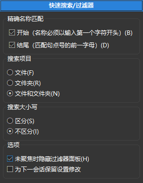
精确名称匹配：
开始（名称必须以输入第一个字符开头） – 这意味着输入的文本将匹配 "text*" 掩码，其中 "*" 是任意数量的任意字符。
结尾（匹配句点号的前一字母） – 如果输入的字符中有一个点，则名称必须以这些字符结尾。例如，如果您输入 "dx.l"，则文件掩码将是 "* wx.l *"。
如果没有选中任何内容，则输入的字符可以位于文件名的任何部分。
我喜欢选择 开始（名称必须以输入第一个字符开头），然后我可以只输入我正在寻找的文件名的第一个字符，然后是第二个字符，等等。文件会以这种方式快速定位。
在下面，您可以设置大小写敏感性并选择要搜索的内容：仅文件或文件夹，或两者。
这些选项可以在快速搜索/过滤器栏中动态更改。您还可以在搜索和过滤器之间切换。
选项：
未聚焦时隐藏过滤器面板 – 快速搜索/过滤面板将在您将焦点移到文件面板时自动隐藏。在 简要视图 中，隐藏面板无法正常工作，因此该选项在找到合适的解决方案之前将被忽略。
为下一会话保留设置修改 – 默认情况下，快速搜索面板中更改的所有参数将仅在程序关闭之前保留在内存中，该选项允许更改此行为。
本节包含在其他设置部分中没有合适位置的参数：
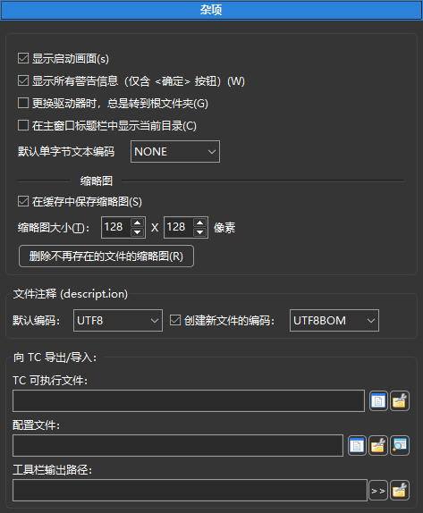
显示启动画面 – 如果启用，在显示主窗口之前，Double Commander 将显示一个启动画面，其中包含程序图标和版本、编译日期，以及 Lazarus、FPC 和操作系统的版本。
显示所有警告信息（仅含 <确定> 按钮） – 如果启用，将显示警告消息。（例如，如果 Double Commander 无法由于目标目录中的文件系统限制而设置文件的某些属性或属性。）
更换驱动器时，总是转到根文件夹 – 如果未选中，Double Commander 将转到该驱动器上最后打开的目录（在这种情况下，您可以通过按其按钮两次转到驱动器的根目录）。
在主窗口标题栏中显示当前目录 – 如果启用，Double Commander 将在主窗口标题栏中显示当前文件夹的名称和活动面板路径。
默认单字节文本编码： – 默认情况下（NONE），内置文件查看器和内部编辑器使用自动编码检测，但您可以指定支持的单字节编码之一作为默认值。此参数不影响多字节编码（UTF-8、UTF-16 等）的自动检测。还提供特殊值：
ANSI – 默认系统 ANSI 编码（取决于系统区域设置）。
OEM – 默认系统 OEM（DOS）编码（取决于系统区域设置）。
缩略图 – 在这里，您可以设置图像的缩略图大小并启用在缓存中保存缩略图（否则，缩略图缓存将仅在程序关闭之前存储在内存中）。参数值用于相应的 文件列表视图模式 和内置 查看器 中。缩略图缓存目录可以在 配置 部分找到。Double Commander 使用 PNG 或 JPEG（仅适用于 .bmp、.jpg 和 .jpeg）格式。缩略图名称是源文件完整名称的 MD5 值。源文件的完整名称、大小和修改日期将添加到文件中。
删除不存在文件的缩略图 按钮将帮助您删除过时的缩略图。
文件注释（descript.ion） – 在这里，您可以设置现有 文件注释 的默认编码（OEM、ANSI 或 UTF-8）以及新文件的编码（UTF-8 BOM、UTF-16 LE 或 UTF-16 BE）。
下一组参数用于从 Total Commander 导入和导出 常用文件夹列表 和 工具栏：Total Commander 可执行文件和主配置文件的路径和名称，以及工具栏输出路径。
允许 Double Commander 自动刷新面板，类似于 Ctrl+R 手动刷新命令的效果。
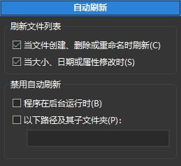
刷新文件列表 – 指定 Double Commander 应该对哪些事件做出反应并更新文件列表和状态栏：
当文件创建、删除或重命名时刷新。
当大小、日期或属性更改时。
如果可能，Double Commander 会对文件列表进行适当的更改，否则会完全重新读取文件列表。如果更改数量很大（如果超过四分之一的文件受到影响或更改总数超过 100），则文件列表将被完全重新读取。
注意：此功能可能无法在挂载的网络目录中工作。
如果两个选项都被禁用，Double Commander 将不会监视第三方应用程序所做的更改，并且在程序对文件系统进行更改后，它将重新读取整个文件列表。
在虚拟文件系统（WFX 插件、GVfs）中，当您创建、删除或重命名文件时，Double Commander 会重新读取整个文件列表。
注意：请记住，最终结果可能取决于 插入新文件 和 移动更新文件 参数在 文件视图 设置部分中的值。
您还可以禁用自动刷新：
当 Double Commander 窗口在后台或最小化时。
对于指定的路径及其子目录，只需用分号“;”分隔它们，而不带空格（例如 /home;/media/cdrom）。

第一个选项启用在文件名左侧显示图标：
所有关联 + EXE/LNK（慢） – 与 所有 相同，但另外：来自.exe、.ico、.cur、.ani和快捷方式（Windows）的图标，来自应用程序目录的应用程序图标（即.app、macOS）、.desktop和.directory（Linux和其他类Unix系统）。此外，DC还将显示在desktop.ini（Windows）和.directory（Linux）文件中指定的文件夹图标。
全部 – 将显示与任何程序关联的所有文件类型的图标（来自系统设置和Double Commander 文件关联）。
仅标准图标 – 仅显示在pixmaps.txt文件中列出的图标和文件关联设置中的图标。在这种情况下，您只能使用来自Double Commander图标主题的图标（请参阅程序文件夹中的pixmaps/dctheme/XxX/mimetypes目录）或指定完整（带路径）文件名。创建图标主题的说明请参见常见问题解答。
无图标。
显示叠加图标，比如链接 – 如果启用，Double Commander 将显示叠加图标，例如 .lnk 文件和链接的箭头。
淡化隐藏文件（较慢） – 如果启用，Double Commander 将以 50% 的透明度显示隐藏文件的图标。
禁用特殊图标 – 您可以禁用为指定目录及其子目录加载特殊图标（叠加图标、.exe/.lnk 文件的图标），只需用分号“;”分隔它们，而不带空格。
图标大小 – 您可以从以下大小中选择：
文件面板 – 16x16、24x24、32x32 或 48x48。
磁盘面板 – 16x16、24x24 或 32x32。
主菜单 – 16x16、24x24 或 32x32。
在按钮上显示图标 – 如果启用，Double Commander 将在对话窗口的按钮上显示图标（确定、取消、开始、添加到队列等）。
显示菜单中操作的图标 – 如果启用，Double Commander 将在应用程序窗口的主菜单和批量重命名工具中显示图标。此选项还启用在常用文件夹列表和收藏标签菜单中显示子菜单图标。
在最后一个参数图标主题中，您可以从下拉菜单中选择一个图标集。Double Commander 附带一个DCTheme图标主题，但您可以创建并添加自己的主题，详细信息请参见常见问题解答。
注意：在类Unix系统中，Double Commander 将主要使用系统图标主题，如果某些图标不存在，它将使用自己的图标。
忽略特定文件和文件夹（每行一个）：它们将不会显示在面板中。
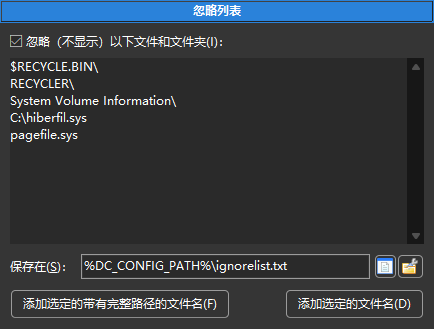
您可以使用文件的完整路径或文件名。
支持通配符“*”和“？”（符号“*”表示匹配任意数量的字符，符号“？”表示匹配任意一个字符）。
当掩码以目录分隔符结尾时，它将仅匹配目录。
保存在： – 忽略列表位置（默认是 ignorelist.txt，位于 doublecmd.xml 附近）。
添加选定的带有完整路径的文件名 – 将添加在活动面板中选择的所有文件/文件夹（如果存在）或光标下的文件的完整路径。
添加选定的文件名 – 将添加在活动面板中选择的所有文件/文件夹（如果存在）或光标下的文件的名称。这意味着它们将在所有地方隐藏。
注意：这两个按钮不会在文件夹名称的末尾添加目录分隔符。
您可以使用内部命令 cm_SwitchIgnoreList 来打开和关闭此选项，或在工具栏上添加按钮或热键。
请参阅专门的 压缩文件处理 帮助页面，了解如何使用和配置它。
本节包含鼠标光标悬停在文件上时的工具提示设置。
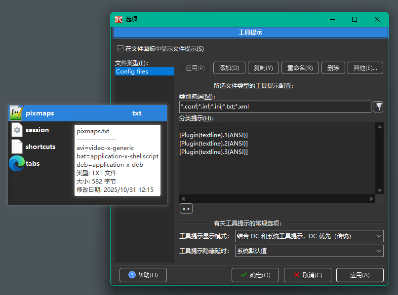
显示文件面板中文件的工具提示 – 启用使用工具提示的功能。
文件类型 – 包含文件组的列表。 Double Commander 从上到下检查列表，直到找到第一个匹配项：列表中较高的文件组将覆盖下面的任何文件组。
按钮：
应用 – 将保存所选文件类型的设置。
添加 – 将添加一个新文件类型并询问名称，您可以写下文件的描述、功能或打开的程序。
复制 – 将使用新名称复制所选文件类型。
重命名 – 将提示输入所选文件类型的新名称。
删除 – 将删除所选文件类型。
其他... 按钮是一个菜单：
放弃修改 – 将重置所选文件类型中的所有未保存更改。
工具提示文件类型排序 – 将按字母顺序对文件类型进行排序（首先是大写字母，然后是小写字母）。
导出... 和 导入... – 允许将工具提示导出到 DC 工具提示文件，并从这些文件中导入（全部或部分）。
在下面，您可以配置所选文件类型的工具提示内容。
在行 类别掩码 中输入通配符掩码以匹配文件类型（符号“*”表示匹配任意数量的字符，符号“？”表示匹配任意一个字符）。您可以在此处使用分号“;”而不带空格输入多个文件类型。您还可以使用搜索模版（ ），包括使用内容插件的搜索。
），包括使用内容插件的搜索。
在 分类提示 字段中，您可以输入任何文本并使用 WDX 插件字段获取信息（“>>”按钮）。
其余参数是有关工具提示的常规选项。
工具提示显示模式 – 确定 Double Commander 将显示哪种类型的工具提示以及如何组合它们（如果两种类型都存在）：
结合 DC 和系统工具提示，DC 优先（传统）。
组合 DC 和系统工具提示，系统优先。
尽可能显示DC工具提示，不显示系统。
仅显示 DC 工具提示。
仅显示系统工具提示。
系统工具提示的内容取决于操作系统：
Windows：文件名，与 Windows 资源管理器中的相同。如果无法获取信息，则 Double Commander 将显示与 Linux 和其他类 Unix 系统相同的内容。
Linux 和其他类 Unix 系统：文件名、修改日期和大小。
工具提示的第一行始终包含文件名，如果您在 分类提示 字段中没有指定任何内容，则 DC 工具提示将仅包含文件名。
工具提示隐藏延时 – 设置工具提示的显示持续时间：系统默认值、1 秒、2 秒、3 秒、5 秒、10 秒、30 秒、1 分钟和从不隐藏（当您将鼠标光标移动到另一个文件或文件面板外部时，工具提示将被隐藏）。
在本节描述开头的屏幕截图中，您可以看到一个工具提示的示例，该工具提示使用 textline.wdx 插件显示文本文件选定行的内容（在本例中为第一、第二和第三行），选择了 组合 DC 和系统工具提示，系统优先 模式。
此项打开配置文件关联。所有关联集都包含在文件 extassoc.xml 中。
在这里您可以自定义文件关联并为所选文件类型设置命令或脚本。命令将被添加到文件的 上下文菜单 中。 Double Commander 还允许简单地设置（或替换）文件类型的图标，而无需添加任何操作。
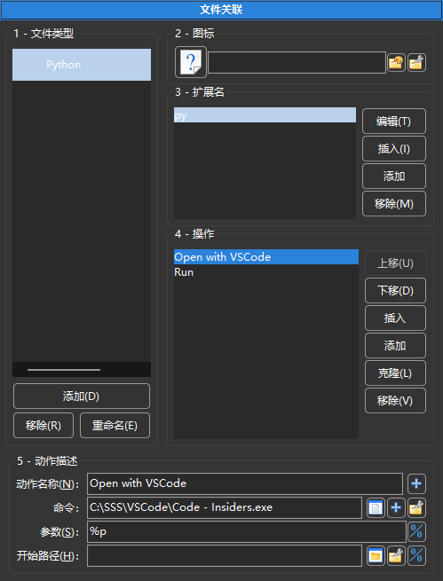
文件类型 – 包含扩展名列表。每个组可以包含多个文件扩展名，并且可以将此类组与各种程序关联。
添加 – 添加新组。您应该输入组名称。
移除 – 移除组。
重命名 – 允许为组设置新名称。
图标 – 您可以为此组设置图标的路径。 Double Commander 支持常用的图像格式，此外在 Windows 中您可以使用来自二进制可执行文件（.exe 或 .dll）的图标；在这种情况下，DC 将自动从可用的图标中选择合适的图标大小。您还可以仅指定图标的名称而不带扩展名（通常使用 MIME 类型图标），在这种情况下：
Windows： Double Commander 将使用其当前图标主题中的图标。
Linux 和其他类 Unix 系统： Double Commander 将使用系统图标主题中的图标，因为它具有优先权。如果没有图标文件，程序将使用其当前图标主题中的图标。
这是一种方便的方式，因为 Double Commander 将自动从可用的图标中选择合适的图标大小，并将考虑图标主题的切换。
扩展名 – 在这里您可以为所选组设置扩展名（不带点）。您可以使用竖线“|”（之间不带空格）添加多个扩展名。特殊值：
file – 任何文件;
folder – 任何文件夹;
default – 当特定扩展名关联不存在时使用。
插入 – 在列表的当前位置添加新扩展名。
添加 – 在列表的末尾添加新扩展名。
移除 – 从组中删除扩展名。
编辑 – 在这里您可以为组设置命令。
插入 – 在列表的当前位置添加新操作。
添加 – 在列表的末尾添加新操作。
移除 – 从列表中删除操作。
上移, 下移 – 移动操作。如果有多个操作，可以重新排序。
操作名称： – 设置操作类型。变体：
从弹出菜单
打开 – 动作将在按下 Enter 或双击后运行。
查看 – 动作将在按下 F3 后运行。
编辑 – 动作将在按下 F4 后运行。
其他动作显示在文件上下文菜单中（子菜单“操作”）。
命令 – 来自桌面环境的任何命令。还提供了几个宏（名称区分大小写！）：
{!DC-EDITOR} – 调用内部编辑器;
{!DC-VIEWER} – 调用内部查看器;
{!EDITOR} – 调用编辑器（内部或外部，取决于配置）；
{!VIEWER} – 调用查看器（内部或外部，取决于配置）；
{!SHELL} – 在终端中运行并在结束时保持打开。
{!TERMSTAYOPEN} – 在终端中运行并在结束时保持打开；
{!TERMANDCLOSE} – 在终端中运行并请求在结束时关闭它。
“查看”动作与 {!DC-VIEWER} 宏将被考虑用于 快速查看，其他宏和命令将被忽略。
{!TERMSTAYOPEN} 和 {!TERMANDCLOSE} 已被添加以实现统一，并能够使用变量 %t0 和 %t1，{!SHELL} 已被保留以保持向后兼容性。
可以使用 Double Commander 的内部命令作为操作命令。内部命令的参数需逐行设置，因此，此处只能指定一个参数。此外，通过内部命令 cm_ExecuteScript 可运行 Lua 脚本，此时您可以通过内部命令（cm_CopyFullNamesToClip 或 cm_SaveSelectionToFile）或 DC.ExpandVar 函数获取所选文件的名称。
参数 – 命令参数，包括变量：
任何来自 “百分号”变量 的变量。
<?command?> – 在系统 shell 中运行 "command" 并将输出传递给上面的命令。
至少，您必须指定一个文件名，通常是 %p 或 %p0，用于光标下的文件。
开始路径 – 命令开始路径。此目录将成为所启动程序的工作目录，若您无需明确指定此目录，可保留此字段为空：此时将以活动文件面板的当前目录（普通文件）或系统临时文件目录（来自压缩包和 WFX 插件的文件）作为工作目录。此处可使用 %D 变量、%d 变量或环境变量。
所有可用的操作将显示在上下文菜单的“操作”子菜单中：
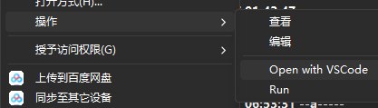
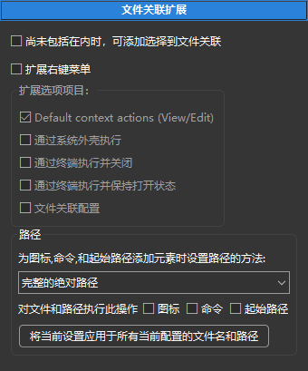
尚未包括在内时，可添加选择到文件关联 – 访问文件关联时，如果当前选定的文件尚未包含在配置的文件类型中，则提供将其添加的选项。这是添加“打开方式”操作的快速方法： Double Commander 将提示您指定类型名称和可执行文件，其他所有操作将自动完成。
扩展右键菜单 – 允许向“操作”子菜单添加一些项目：
Default context actions (View/Edit) – 用于在查看器和编辑器中打开文件的命令。将使用内置工具或外部应用程序（取决于设置），内部文件关联将被忽略。
使用系统外壳 {!SHELL}、{!TERMANDCLOSE} 和 {!TERMSTAYOPEN} 运行（详细信息请参见 此处）：
通过系统外壳执行
通过终端执行并关闭
通过终端执行并保持打开状态
文件关联配置 – 打开 文件关联 配置部分。
以下是为图标、命令和起始路径添加元素时设置路径的方法：
使用完整的绝对路径。
相对于 %COMMANDER_PATH% 的路径。
相对于以下内容。
您还可以将当前设置应用于所有当前配置的文件名和路径。
请参阅专门的 常用文件夹列表 帮助页面，了解如何使用和配置它。
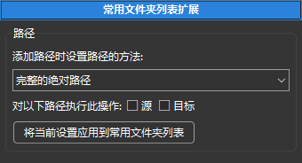
在本节中，您可以选择如何设置路径和目标路径：
使用完整的绝对路径。
相对于 %COMMANDER_PATH% 的路径。
相对于以下内容。
您还可以将当前设置应用到常用文件夹列表。
Created by Rustem (dok_rust@bk.ru)
中文版本由 H1DDENADM1N 创建